Awesome App
Responsive Parallax HTML5 Wordpress Theme
- created: 07/20/2013
- latest update: 07/20/2013
- Design by: Azyrusmax
- Developed by: Señor Themes
Please do not forget to rate our theme. If you have any questions or need support please visit us online so that we can provide immediate assistance. Thank you for purchasing our theme.
Folder Structure
When you unzip the theme you will see 4 folders. They are the following:
- Documentation - it contains guidelines on how to setup the theme on your wordpress environment.
- Awesome App Theme Zip File - this contains all the contents for your wordpress installation.
- PSD - this is the original Photoshop file for this theme.
- Sample data - we are including sample data for you to import to your theme to get you up and running quickly.
Theme File Structure
When you go to theme folder you will see file structure like this:
-
includes
- classes - this is where open source classes added
- css - contains all css template and js plugin styling
- font - we used font awesome for the icons in the web page
- img - template images
- js - all javascript plugins, custom script and js initialization
- options - theme options
- shortcodes - template shortcodes files
- php files
All js, image, css and other files are in one directory.
Shortcodes Used
The theme provides a wysiwyg icons where you can generate bootstrap shortcodes so that you can easily add any bootstrap elements. As of now, the theme supports the following shortcodes for the following elements:
- Buttons
- Accordion
- Grid Builder
- FontAwesome Icons
- Progressbar
Also the it provides the following custom widgets:
- Contact Form
- Features Widget
- Faqs Widget
- Teams Widget
- Jobs Widget
The theme is using 12 columns grid system using Twitter Bootstrap. The width of the theme is 1170px which is good for all large and small desktop monitors and also in mobile devices. The default Bootstrap grid system utilizes 12 columns, the grid adapts to be 724px and 1170px wide depending on your viewport. Below 767px viewports, the columns stack vertically.
For a simple two column layout, create a .row and add the appropriate number of .span* columns. As this is a 12-column grid, each .span* spans a number of those 12 columns, and should always add up to 12 for each row (or the number of columns in the parent).
<div class="row-fluid"> <div class="span4">...</div> <div class="span8">...</div> </div>
Given this example, we have .span4 and .span12, making for 16 total columns and a complete row.
Move columns to the right using .offset* classes. Each class increases the left margin of a column by a whole column. For example, .offset4 moves .span4 over four columns.
<div class="row-fluid">
<div class="span4">...</div>
<div class="span4 offset2">...</div>
</div>
Buttons:
Button styles can be applied to anything with the .btn class applied. However, typically you'll want to apply these to only <a> and <button> elements for the best rendering.
btn - Standard gray button with gradient
btn btn-primary - Provides extra visual weight and identifies the primary action in a set of buttons
btn btn-info - Used as an alternative to the default styles
btn btn-success - Indicates a successful or positive action
btn btn-warning - Indicates caution should be taken with this action
btn btn-danger - Indicates a dangerous or potentially negative action
btn btn-inverse - Alternate dark gray button, not tied to a semantic action or use
btn btn-link - Deemphasize a button by making it look like a link while maintaining button behavior
All bootstrap functionalities can be found here.
CSS Files and Structure
CSS
All theme styling is well-documented. It is divided by sections and usage of styling.
In folder "css" you will find 8 css files:
- Bootstrap readable structured - this is for you to look for specific bootstrap styling if you want to copy specific bootstrap element and modify its style in another file.
- Bootstrap Minified - a minified version of bootstrap css file. A 12-column grid based by Twitter Bootstrap.
- Flexslider - style for Flexslider jQuery plugin.
- FontAwesome Minified
- FontAwesome Minified Version for IE7
- Fresco - style for Fresco jQuery plugin
-
page-layout -
- ?CSS Structure Styling
/* ############################################################### TABLE OF CONTENTS ############################################################### #IMPORTING FONTS - GOOGLE #RESETTING DEFAULT VALUES #CLEARFIXES #SETTING GLOBAL FONT SIZES #BANNER STYLING #HEADER SECTION STYLING #CONTENT STYLING #CUSTOM MARGINS AND PADDINGS #MOBILE AND TABLET COMPATIBILITY ###############################################################
Javascript
In folder js you will find jQuery plugins, but all adjustments are in just one file: "scripts.js".
Main jQuery files are:
- jQuery - jquery-1.9.1.min.js
- Bootstrap - bootstrap.min.js
- Fresco - fresco.js
- Google Map - gmap3.min.js
- Flexslider - jquery.flexslider-min.js
- Localscroll - jquery.localscroll-1.2.7-min.js
- Modernizr - jquery.modernizr.min.js
- jQuery Nav - jquery.nav.js
- Parallax - jquery.parallax.js
- jQuery ScrollTo - jquery.scrollTo-1.4.2-min.js
- Sticky - jquery.sticky.js
- jQuery Validate - jquery.validate.min.js
- Main Script - scripts.js
Sample Scripts in Main JS file:
/*----------------------------------------------------*/
/* MOBILE DETECT FUNCTION
/*----------------------------------------------------*/
var isMobile = {
Android: function() {
return navigator.userAgent.match(/Android/i);
},
BlackBerry: function() {
return navigator.userAgent.match(/BlackBerry/i);
},
iOS: function() {
return navigator.userAgent.match(/iPhone|iPad|iPod/i);
},
Opera: function() {
return navigator.userAgent.match(/Opera Mini/i);
},
Windows: function() {
return navigator.userAgent.match(/IEMobile/i);
},
any: function() {
return (isMobile.Android() || isMobile.BlackBerry() || isMobile.iOS() || isMobile.Opera() || isMobile.Windows());
}
};
/*----------------------------------------------------*/
/* NAVIGATION
/*----------------------------------------------------*/
$('ul.navigation li').localScroll( { duration: 1200, easing: 'easeInOutExpo' } );
$('ul.nav li a').click(function() {
$('ul.nav li').removeClass('current');
$(this).parent().addClass('current');
});
$("#navbar_menu_fixed").sticky({topSpacing:0});
Getting Started
In the following steps you will learn how to get started with Awesome App Theme. First, make sure you have Wordpress installed on your hosting account. If you do not have Wordpress installed please follow the following instructions.
The fastest way to install Wordpress is through cPanel's Fantastico De Luxe Software Service. Chances are that if you have a Linux web hosting account you have Fantastico De Luxe.
Login to your cPanel account. If you don't know what your login is please contact your web hosting provider but it's usually something like, yourdomain.com/cpanel. When prompted please enter your Username and Password. This is usually the same username and login as your FTP login.
Now that you are logged in locate 'Fantastico De Luxe'
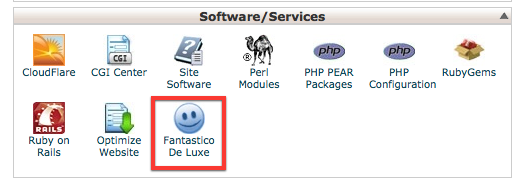
Click Wordpress
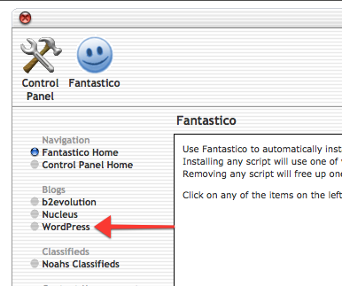
Click New Installation
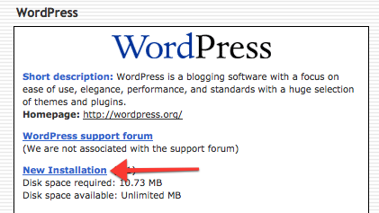
Next, read the instructions and fill in the following information and click "Install Wordpress"
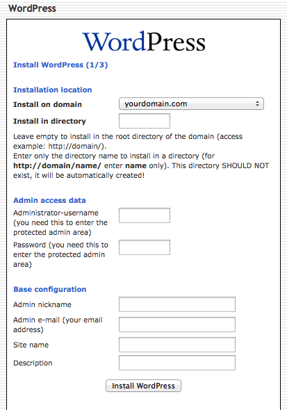
You will now see a review page. Click "Finish Installation"
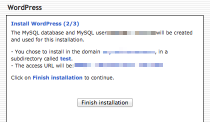
Upon successfully installing Wordpress you will see the following:
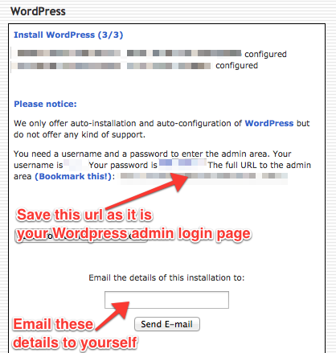
You're done. You have successfully installed Wordpress! If you need further details especially with installing Wordpress manually please visit the following http://codex.wordpress.org/Installing_WordPress
Installing the Theme
Installing the theme is easy. You can upload your theme via FTP and then activate it within admin. Or you can simply upload it directly within your Wordpress admin panel. I am going to explain how to upload and activate the theme within Wordpress admin.
Login to Wordpress admin and go to Appearance > Themes.
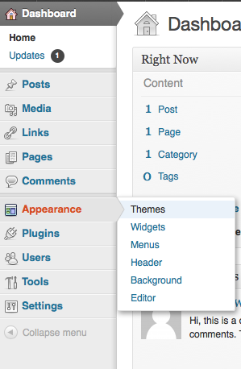
Next click Upload. You should now see this.
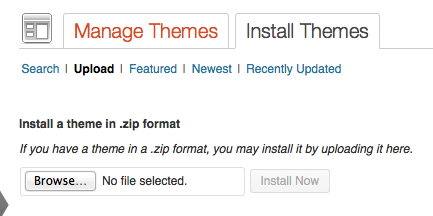
Browse and locate the filename, "awesome-app-theme.zip" that was included in the download when you purchased this theme. Click "Install Now"
Upon successful install you will see this "Theme installed successfully." Click the "Activate" link.
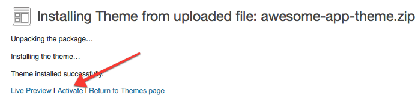
Browse and locate the filename, "awesome-app-theme.zip" that was included in the download when you purchased this theme. Click "Install Now"
Upon successful install you will see this "Theme installed successfully." Click the "Activate" link.
Now that your theme is installed and activated, the default home page will display the blogroll. To get our theme looking like the demo we need to assign the One Page Template to it. To do this go to:

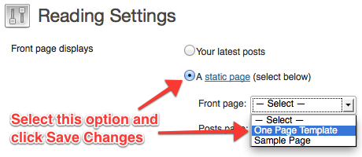
Now it's time to add section. In the following instructions you will learn how to do this
Import the Sample Data
Along with the theme we have provided sample data and theme settings. This is the content you see from the live demo and will help you get started. Otherwise, you will be starting with a blank canvas and nothing is more intimidating than a blank page.
Navigation to Tools > Import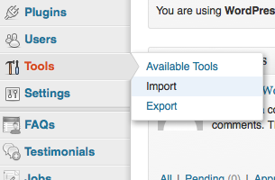
Next, let's install the Wordpress Importer by clicking the Wordpress link and proceed with the plugin installation.
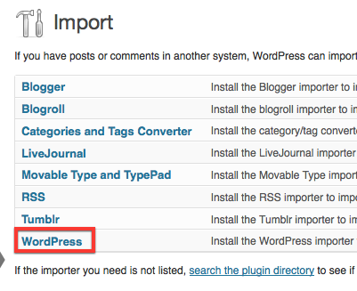
On successful install activate the plugin.
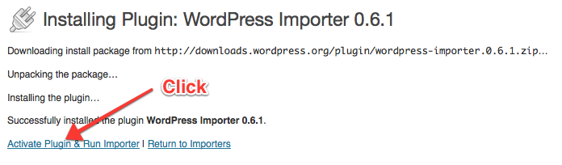
Browse and locate the "sample-data.xml" file and import it.
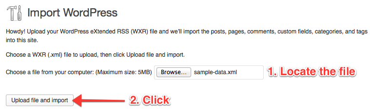
Next, you will see the following screen
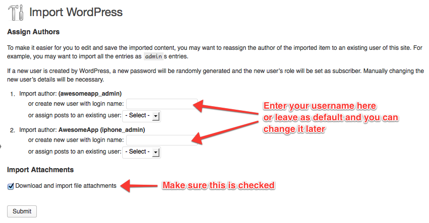
Click "Submit"
You will now see the following message.
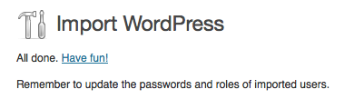
Lastly, go to Theme Settings
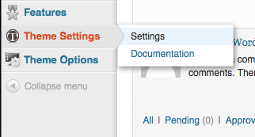
Click Import
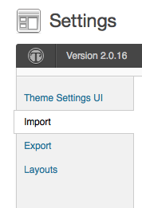
Scroll down to Theme Settings and paste the contents of the "theme-settings.txt" file included for you in the download after when you purchased this theme. Click Import Theme Settings.
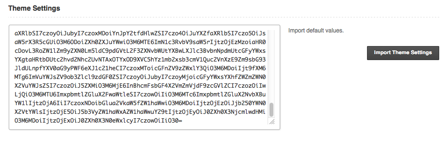
You're done! Now visit your website and you will notice the sample data has been imported. All you have to do now is replace the sample content with your own.
Admin Overview
Sections
What is a section? In this document when talking about "Section" or "Sections" we are referring to a Page or Pages. Since this is a one page theme we are using Pages to create the many sections that will untilmately make up your website.
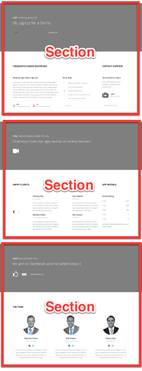
How to Create a New Section
You can view a video explanation of this here.
Go to: Pages > Add New.
Add your page content
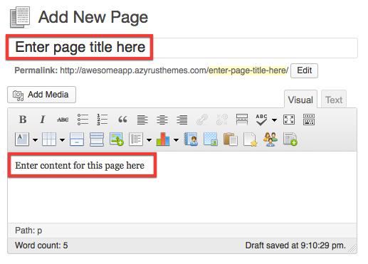
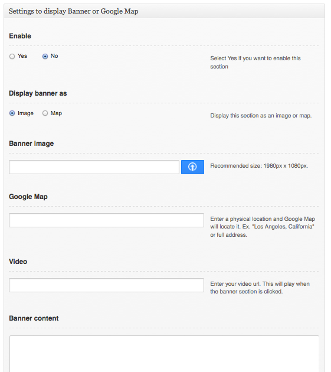
Click Publish
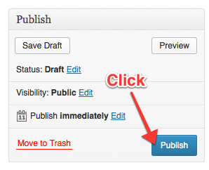
Go to Theme Options > Page Sections > Click Add New

Fill in the following information and click "Save Changes"
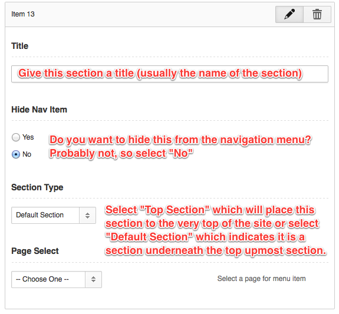
Next, you may Drag and Drop your section to where you want it to appear on your website.
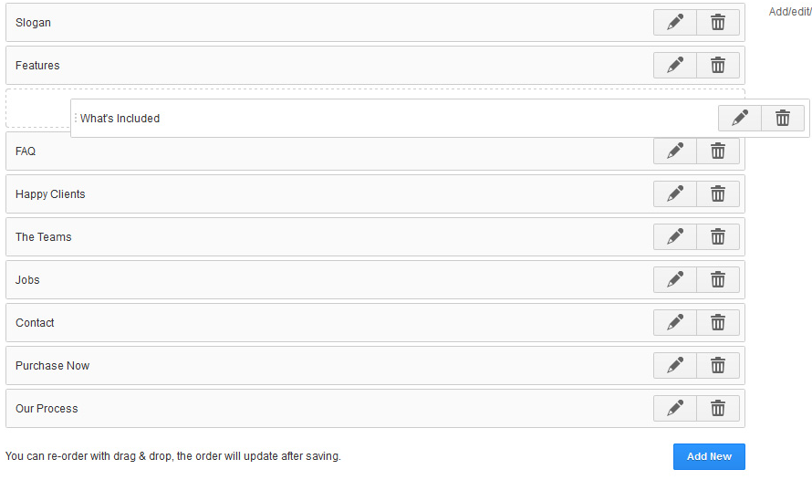
Congratulations! You're new section is now added. Visit the front end of your website to see it in action.
How to Remove a Section
Sometimes you just need to remove a section you don't need anymore. To do this go to:
- Pages > All Pages
- Locate the Page and add to Trash
- Then go to Theme Options > Page Sections
- Locate the Section you want to remove and click the Trash icon.
- Click Save Changes
Default Custom Post Types
The admin sidebar menu has custom post types for you can easily manage the custom widgets data. These are:
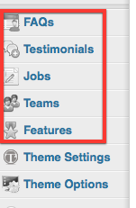
These sections are simple to use. Let's go through each of them.
IMPORTANT - Before you add content to the following post types you must first create the page and insert the appropriate shortcode into the body of the page. For example, if you need to add a testimonials section to your website you must first create the Testimonials page in Pages > Add Page, enter the [testimonial] shortcode and Publish.
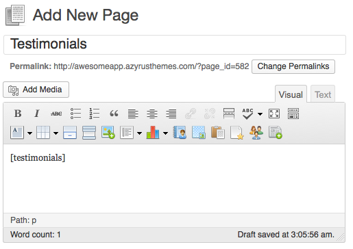
Add FAQ's
Go to: FAQ > Add FAQ. Fill in the following:
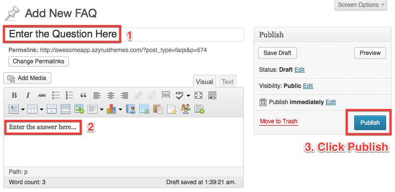
Add Testimonials
Go to: Testimonial > Add Testimonial. Fill in the following:
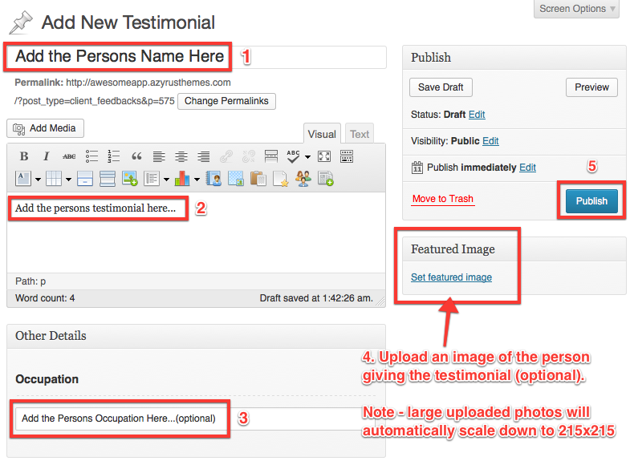
Add Jobs
Go to: Jobs > Add Job. Fill in the following:
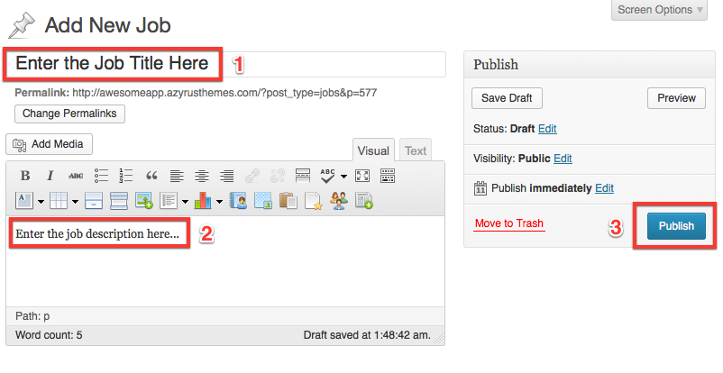
Add Team Members
Go to: Teams > Add Team. Fill in the following:
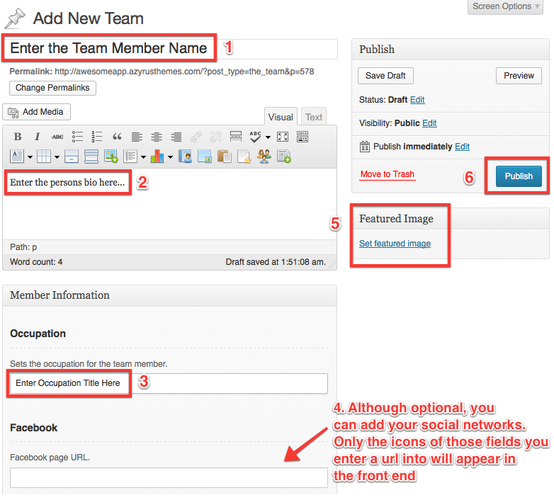
Add Features
The features section looks like this in the front end:
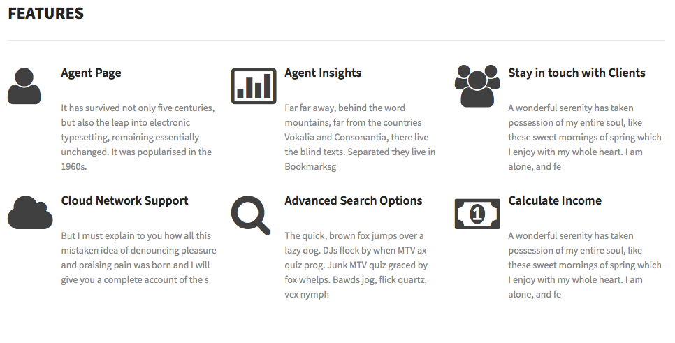
Go to: Features > Add Features. Fill in the following:
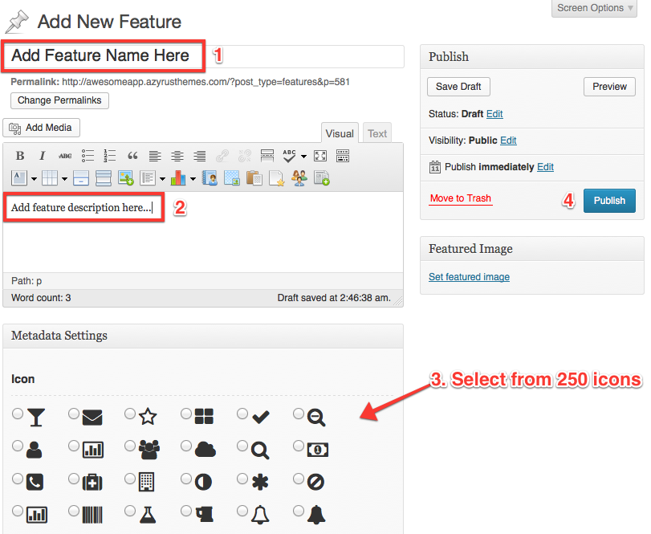
Theme Options
Inside the Theme Options section you can execute several things. You can view a video explanation of this here.
- General - add a backgroun color or image, heading color, upload a favicon, logo, enable/disable Purchase button
- Page Sections - add the sections you want to inserting into your website. Click and drag the sections up/down to place them in just the right spot that you want them to appear on your website.
- Banner Settings - enable/disable hover state for banner sections, parallax effect, and control the speed of the parallax effect.
- LinkedIn Apply API - allows you to add a LinkedIn button to your jobs section so that people can apply for a job via LinkedIn.
- Contact Settings - enter the email you want the contact form to send all submissions.
- Scripts and Styles - here's where you can insert your Google Analytics code.
- Typography - browse hundreds of Google Web fonts and enjoy a preview of it instantantly. This will affect all paragraphs styles. Button text and heading will not be affected.
Video Tutorials
Please visit our playlist for all videos related to this themes here.
Credits
Twitter Bootstrap - http://twitter.github.io/bootstrap/index.html
Option Tree - https://github.com/valendesigns/option-tree
jQuery Parallax - http://www.ianlunn.co.uk/plugins/jquery-parallax
Flickr Photo - http://www.flickr.com/photos/markjsebastian/6687773697/sizes/o/
Font Awesome - http://fortawesome.github.io/Font-Awesome/